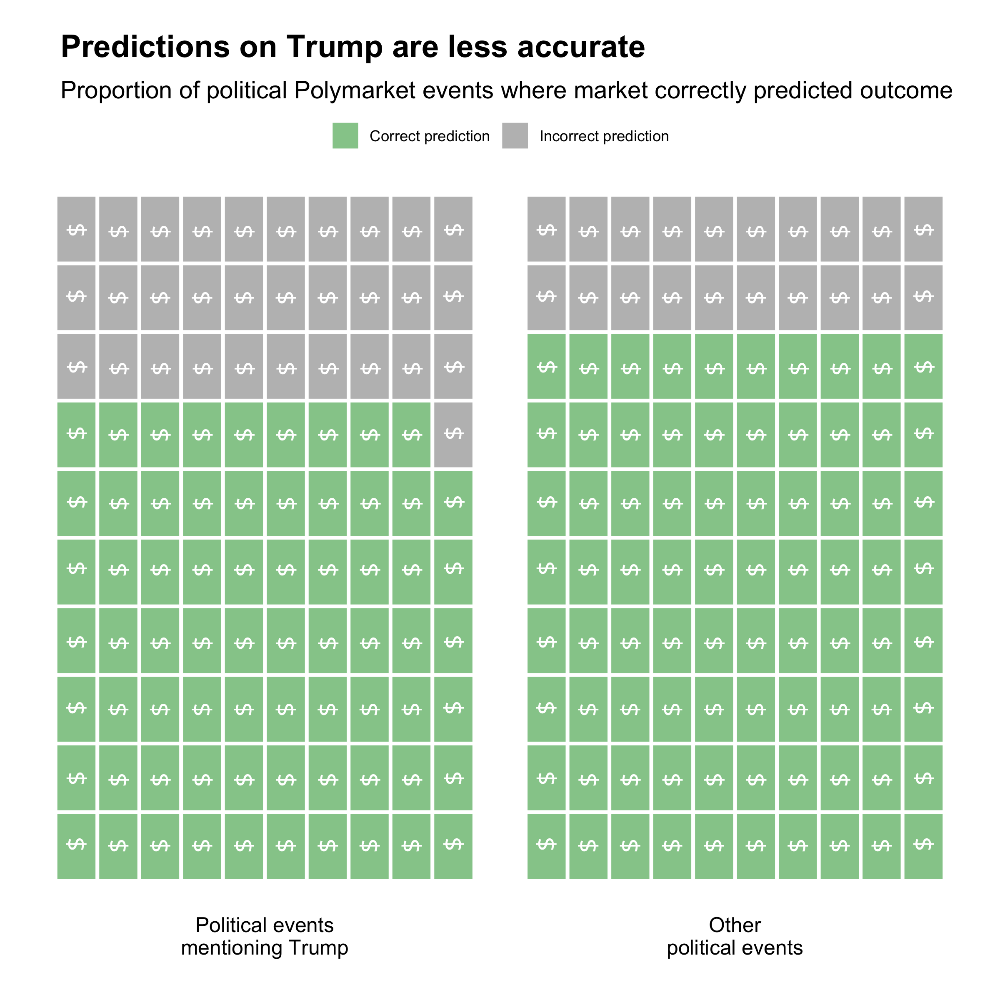

Know what Trump is going to do next? Willing to bet on it?
An analysis of how accurate predicting political events can be in the age of Donald Trump
The rise of prediction markets like Polymarket over the past decade has given them large-scale legitimacy, especially after their correct prediction of the 2024 election. A new analysis reveals, however, that markets may have a harder time predicting Trump's actions compared to other political events.
Proponents of these markets argue that since money is on the line, they can often lead to more powerful predictions. Users will buy or sell shares of a certain outcome, like whether Trump will end the war in Ukraine within 90 days of his presidency. Each possible outcome's price rises and falls in real time as users trade using real money.
Utilizing the Polymarket to analyze each political event since 2024, the analysis found that large political betting markets not mentioning Trump correctly predicted outcomes almost 80% of the time. For markets dealing with Trump, that accuracy fell to 68%.
There may be several reasons for this discrepancy.
First, markets may be influenced by decisions by external factors like political preference.
Mattew Flynn, a professor at Texas State University, said these markets differ from the stock market in how they price information, and possibly their accuracy. He found that Polymarket can react more quickly than traditional markets to changes. Even still, investing in an individual's decisions rather than a corporation leads to differing incentives.
“In some sense, it does ignore if you have some strong behavioral bias that might influence you to act a certain way,” Flynn said. “If you love the Mets, even though the Mets might not be good, you'd still bet on the Mets all the time.”
Evidence of “whales” who dumped large amounts of money into markets predicting the presidential election caused controversy in 2024 by those alleging market manipulation.
Markets may have differing levels of trading volume. A less popular market predicting a specific action of Trump may be less accurate than a larger market predicting the actions of the Federal Reserve. The data shows that accuracy is largely unaffected by the amount of money in a market.
Many of these markets involve President Trump, especially since his inauguration.
Trump mentioned
Trump not mentioned
9% of
events
January 2024
January 2024
91%
February 2024
February 2024
22%
78%
March 2024
March 2024
100%
April 2024
April 2024
97%
May 2024
May 2024
11%
89%
June 2024
June 2024
45%
55%
July 2024
July 2024
12%
88%
August 2024
August 2024
4%
96%
September 2024
September 2024
6%
94%
October 2024
October 2024
16%
84%
November 2024
November 2024
40%
60%
December 2024
December 2024
7%
93%
January 2025
January 2025
70%
30%
This presents an increasing risk to investors in these markets and casts doubt on the predictive power of these markets as a whole. Polymarket users have already invested more than $18 million on whether Trump will end the war in Ukraine by the end of his first 90 days (currently, a 30% chance of occurring, according to the bettors).